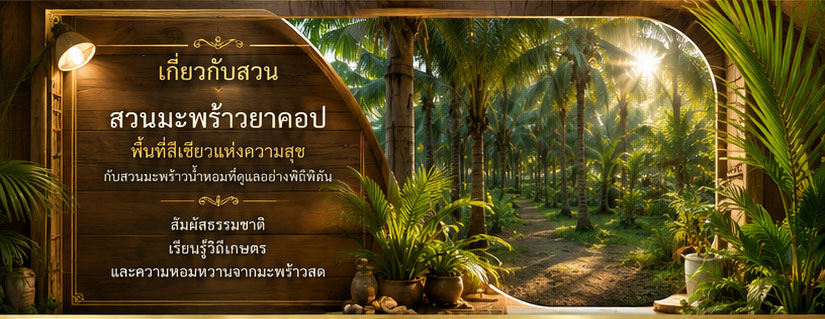
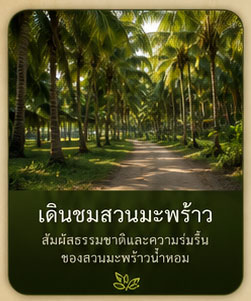
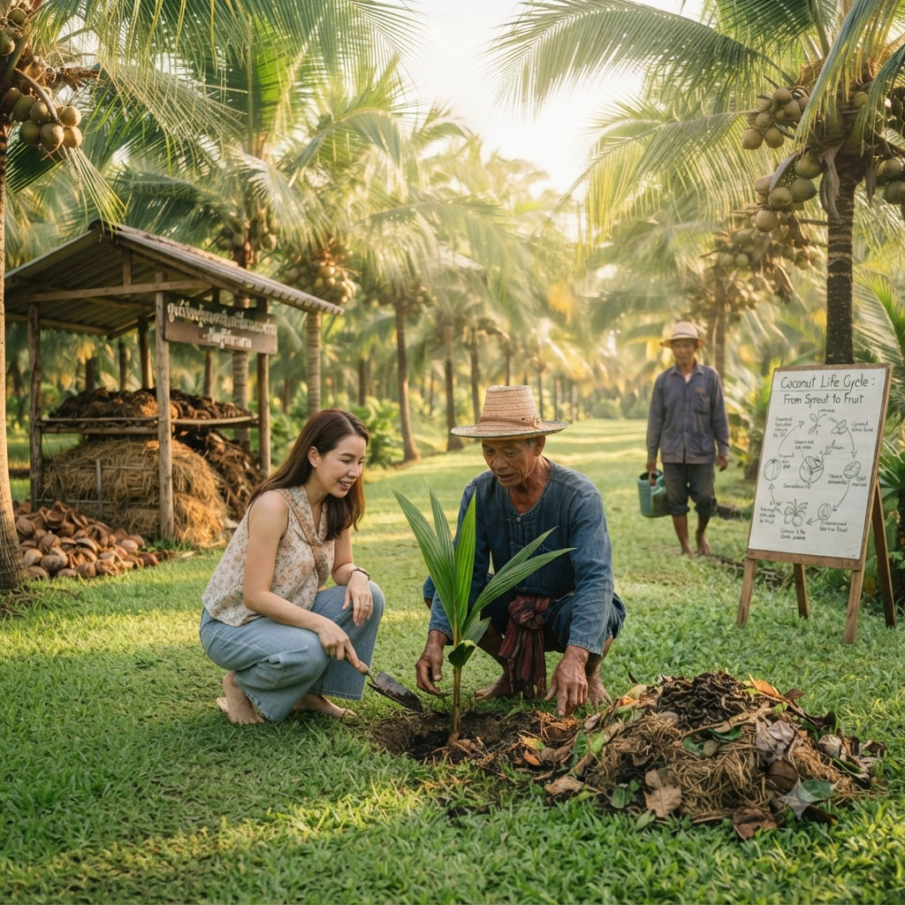
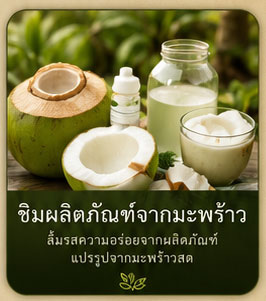
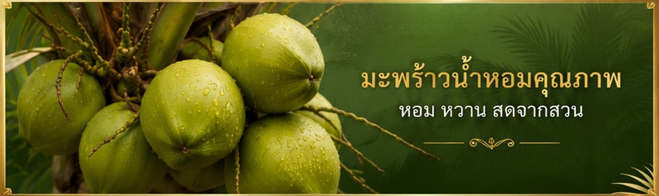

จุดเริ่มต้นของเรา
Jacob's Coconut Farm
จากความหลงใหลในวิถีชีวิตที่เรียบง่ายและความงดงามของธรรมชาติ สู่จุดเริ่มต้นของ สวนมะพร้าวยาคอป สวนมะพร้าวน้ำหอมและมะพร้าวแกงที่บุกเบิกและดูแลโดยชาวต่างชาติผู้มีใจรักในผืนดินและวิถีเกษตรกรรมอย่างแท้จริง
ด้วยความตั้งใจที่จะส่งมอบสิ่งที่ดีที่สุดและปลอดภัยที่สุดให้แก่ผู้บริโภค เราจึงมุ่งมั่นทำเกษตรกรรมยั่งยืนจนได้รับการรับรองมาตรฐาน GMP ปลอดสารพิษ จากกระทรวงเกษตรและสหกรณ์
"อาหารที่ดี ต้องเริ่มจากผืนดินที่ปลอดภัย" ทุกต้นมะพร้าวในสวนของเราจึงเติบโตขึ้นท่ามกลางระบบนิเวศที่สมดุล ปราศจากสารเคมีปนเปื้อน 100%

🌴 แหล่งท่องเที่ยวเชิงเกษตร (Agritourism)
สวนมะพร้าวยาคอปไม่ได้เป็นเพียงแค่พื้นที่เพาะปลูก แต่เราเปิดประตูต้อนรับทุกคนให้เข้ามาสัมผัสประสบการณ์อ้อมกอดของธรรมชาติ

สูดอากาศบริสุทธิ์
เดินผ่อนคลายและชมร่มเงาของทิวต้นมะพร้าวที่เขียวขจีโอบล้อมรอบตัวคุณ

เรียนรู้วิถีชาวสวน
สัมผัสเบื้องหลังและขั้นตอนการดูแลรักษาสวนมะพร้าวแบบอินทรีย์แท้ๆ

ชิมรสชาติจากต้น
ลิ้มรสความสดชื่นของน้ำมะพร้าวน้ำหอมแท้ๆ หอม หวาน ธรรมชาติ ไร้สารเคมี
🐝 นวัตกรรมสีเขียว: การกำจัดศัตรูพืชด้วย "แตนเบียน"
หนึ่งในไฮไลท์สำคัญของสวนเรา คือการพึ่งพาธรรมชาติในการดูแลธรรมชาติเอง เราหลีกเลี่ยงการใช้ยาฆ่าแมลงโดยสิ้นเชิง แต่เลือกใช้ "แมลงแตนเบียน" (Parasitoid Wasps) ฮีโร่ตัวจิ๋วในการควบคุมและกำจัดศัตรูมะพร้าว อาทิ หนอนหัวดำ หรือแมลงดำหนาม
แตนเบียนทำงานอย่างไร?
แตนเบียนจะทำหน้าที่ตามล่าและวางไข่ในตัวหนอนหรือดักแด้ของศัตรูมะพร้าว ทำให้ศัตรูพืชหยุดการเจริญเติบโตและตายไปในที่สุด ถือเป็นวิธีทางชีวภาพที่ปลอดภัยต่อมนุษย์ ไม่ทิ้งสารตกค้าง และช่วยรักษาสมดุลของระบบนิเวศอย่างยั่งยืน
ศูนย์เรียนรู้การเพาะเลี้ยงแมลงแตนเบียน
สำหรับผู้ที่สนใจและกลุ่มเกษตรกร สวนมะพร้าวยาคอปยังเปิดเป็นพื้นที่แบ่งปันความรู้ "การเพาะเลี้ยงแมลงแตนเบียน" โดยจะพาไปเรียนรู้อย่างละเอียด:
- 1 การเตรียมพ่อพันธุ์-แม่พันธุ์แตนเบียน: คัดสรรสายพันธุ์ที่สมบูรณ์แข็งแรง
- 2 เทคนิคการเพาะเลี้ยงในห้องควบคุม: เพื่อให้เจริญเติบโตและขยายพันธุ์ได้อย่างสมบูรณ์ที่สุด
- 3 วิธีการปล่อยสู่สวนมะพร้าว: การปล่อยเข้าสวนอย่างถูกวิธีเพื่อให้เกิดประสิทธิภาพสูงสุดในการควบคุมโรค
👋 เรายินดีต้อนรับทั้งนักท่องเที่ยว นักเรียน นักศึกษา และเกษตรกรที่ต้องการเปลี่ยนผ่านสู่วิธีการทำเกษตรอินทรีย์ เพื่อมาร่วมสร้างโลกที่เขียวและปลอดภัยไปด้วยกัน
ผลผลิตจากความใส่ใจ
สดใหม่ ปลอดสารเคมี ส่งตรงจากต้นถึงมือคุณ

ติดต่อเรา
แวะมาหาเราที่ สวนมะพร้าวยาคอป แล้วคุณจะรู้ว่า "ธรรมชาติที่แท้จริง" รสชาติเป็นอย่างไร สวนของเรายินดีต้อนรับทุกท่านครับ
ที่อยู่สวน
27 เกาะหลัก 3 ตำบล เกาะหลัก เมือง ประจวบคีรีขันธ์ 77000
เบอร์โทรศัพท์
Line Official / Social Media
ค้นหาเบอร์โทรศัพท์หรือติดต่อผ่านช่องทางด่วนด้านข้าง